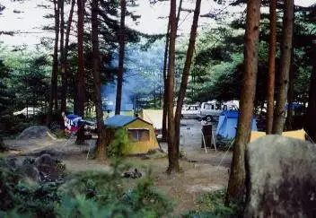
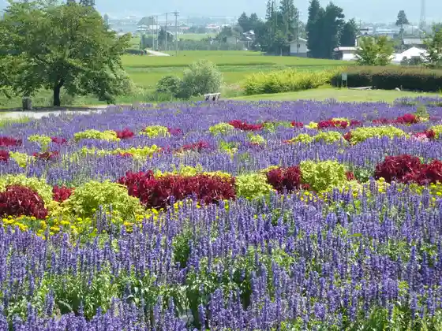
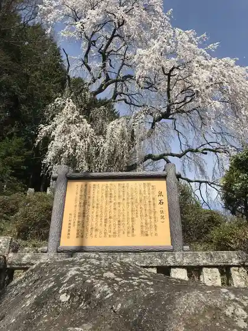
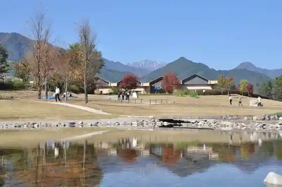

Japan / Nagano / Matsukawamura
Matsukawamura
Matsukawamura · Nagano
Matsukawamura
Highlighted on the Nagano map.

Sights
Matsukawamura Mara Odaka Hara Campground
Matsukawamura, Nagano · 0261-62-2481 · Official / source link
Azumino Chihiro Park Ohana Dan
Matsukawamura, Nagano · 0261-62-3109 · Official / source link

Nezumiana no Shidarezakura
Matsukawamura, Nagano · 0261-62-3109 · Official / source link

Azumino Chihiro Park
Matsukawamura, Nagano · 0261-85-8822 · Official / source link

Kuni Shitei Juyo Bunkazai Kinpuku Yama Kan Matsu In Dozo Bosatsu Hanka Zo
Matsukawamura, Nagano · 0261-62-3366 · Official / source link
Seicho Azumi Fushi
Matsukawamura, Nagano · 0261-62-3366 · Official / source link
Shinano Kuni Matsukawamura Kyo Gaku Taiko
Matsukawamura, Nagano · 0261-62-3109 · Official / source link
Azumino Chihiro Art Museum
Matsukawamura, Nagano · 0261-62-0772 · Official / source link
Tamokuteki Koryu Center Suzu no Oto Horu
Matsukawamura, Nagano · 0261-62-2481 · Official / source link
Matsukawamura Shogaigakushu Center Guriinwaku Matsukawa
Matsukawamura, Nagano · 0261-61-1400 · Official / source link